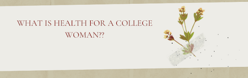
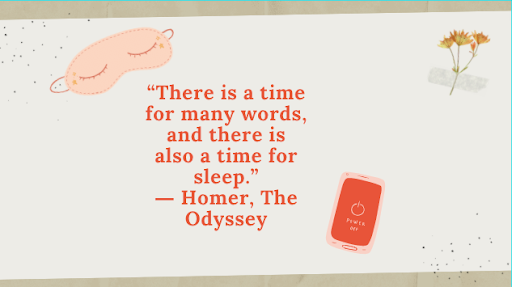
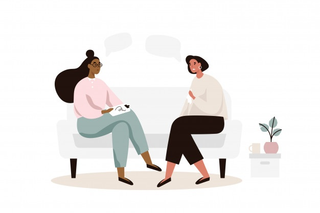
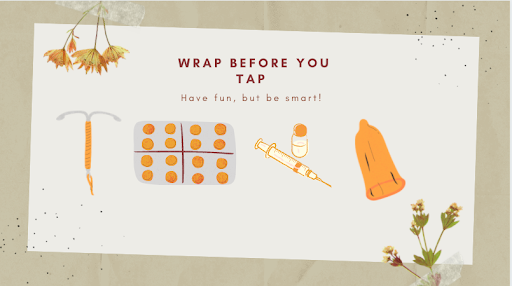

Guest blog by Adira Brenner

As a college student and a woman, I am constantly questioning the ways in which I can actually maintain that “perfect” work life balance adults claim to have. I have been questioning my health in terms of my physical, sexual, and mental health. Here I am going to explain to YOU what I think every mom or parent should discuss with their daughter before going to college.
Sleep
To start, I can say with absolute confidence that the majority of college students do not get the recommended amount of sleep each week. That leaves many to ask why or how. The main reason is that for most college students the idea of “catching-up” on sleep allows them to justify their sporadic sleep. Next question I know I always ask myself is why do we even need 7-9 hours of sleep. A study done by Harvard claims that sleep deprivation affects more than a student rubbing their eyes during class. Sleep deprivation can lead to mood swings, brain “farts” and an increased overall amount of stress.

A month ago I was sleeping less than my usual 8 hours, was constantly overworked and felt like the words in my brain were not what was coming out of my mouth. My amazing mom was like I know the perfect solution. She ordered me a pillow filled with lavender and I am gonna be honest the placebo that scent gave me truly has helped me fall into the deepest sleep since. So tell your child that sleep is for the strong and let us move away from the classic phrase of it being for the weak.
Get Organized
On the topic of stress, I promise getting your child a pretty planner does not equate to perfect organization skills. I have always been the kind of person that gets overwhelmed and stressed when I see a color coded planner. However, in my head I equated a pretty planner with a put together and organized person. I let this get to my head and found myself falling into the cycle of imposter syndrome taking over. I can honestly say that my first semester of college was a hectic mess of me attempting to look put together as I was falling apart due to my lack of calendar and schedule. However, it honestly took the pandemic to push me into my own organization plan. Sitting in my house for months feeling an impending doom, the only way I could feel productive was the usage of to do lists. I learned that finishing my tasks and checking them off a list helped me feel a sense of completion that made me feel like the task was done rather than highlighted purple on my planner. My journey might not be yours or your child’s and that is OKAY! A small stem moment but the second law of thermodynamics says that the energy of the universe is in constant disorganization and is attempting to become organized. If the universe is in disarray don’t beat yourself up for being a little bit of chaotic mess once in a while.
Our Mental Health
I know for myself a large part of going to college was becoming comfortable with the idea of therapy being something almost every gen-z needs. With social media causing unrealistic standards, sometimes a parent or friend is not enough in terms of support. I know for myself being a woman has led me to issues with body dysmorphia and the unrealistic standards I was seeing with photoshopped pictures and the unrealistic goal bodies we describe with celebrities. I was lucky enough to have had a pre-established therapist before college that would meet with me once or twice a month. In our sessions we talked about not only how I was doing, but how external pressures were causing me to think or behave in negative ways regarding my body or mental health. This was a very vulnerable time and for me it was really important I found someone with a similar personality and mindset to me. My therapist worked with me and not against me.

I later had another therapist who did the opposite and was a clearly bad fit as I was regressing in my mental health and was having a lot of struggles with what I believed was very toxic advice. My story is similar to many of my friends and the best way I describe this is the goldilocks effect of finding what fits and feels good. In addition, I mentioned the phrase becoming comfortable at the beginning of this section because therapy is still a taboo subject. Most women I know, including myself, never want to look or feel weak. There is a constant stigma that women are overdramatic and therapists are a band-aid fix to pretend you are dealing with your personal issues. However, this is not true and can be very harmful. For me therapy is about becoming the strong and confident individual you are meant to be by truly being emotionally mature and overcoming your fears of talking about your issues.
If you don’t have the luxury of a private therapist or a pre-existing relationship, reaching out to a school’s counseling center is never a bad move. I know personally I came to college with a pre-established therapist I loved and worked well with, but I know many friends who did not have this luxury and who reached out to our counseling center. Friends were met with a number of free counseling sessions that helped guide them to what they needed from counseling and where to go once the free sessions ran out.
Another great place to start is by looking through your insurance plan and the options for a therapist. The best way is to look for keywords such as anxiety, depression, body dysmorphia, women, etc. in the search box. You can also look at websites with resources as well as using hotlines that can help link you to the proper providers. Or you can call numbers like 1-800-273-TALK (8255) or 911 if you need immediate support.
Our Bodies
In turn it is crucial that we destigmatize the idea of freshman 15 and change the narrative to be that it is okay and important to EAT. The #bodypositivity movement has helped move this conversation in a positive direction, but it truly takes the individual to make the needed behavioral changes to promote healthy eating and a healthy mindset regarding their body.
Many college students have the false notion that vaping is another form of stress release,. Vaping can actually be quite harmful. The increase in vaping can only be combated by early intervention with children during middle and high school years.
Sexual Health and Safety
Another harmful behavior is engaging in unsafe sexual behavior. The Gen Z hookup culture has been enhanced by dating apps and the culture of casual intercourse. Rather than teaching women to shame others for their sexual behavior, we need to encourage them to stay protected and avoid high risks. The common phrase “wrap before you tap” needs to be explained as choosing the best contraceptive for you and ensuring that you use it correctly. A common misconception is that you need a GYN to talk about birth control options. This is untrue, ask your primary care provider about your options and make sure you are truthful about what you want and what would be best for you and your lifestyle. Factual information is the most important way to protect yourself when sexually active so ask questions, I promise your doctor has heard it all and would be happy to listen.

On the topic of wrap before you tap we also need to talk about why condoms are so important. I promise I also snoozed through most of my health classes pretending I knew everything they were saying to me. I am here to say I truly had no idea the extent of why condoms are important. STI rates in the United States have only increased over the last few years and the best in my opinion realistic way to avoid STIs is to use a condom. Condoms and contraceptives are also the best way to prevent unplanned pregnancies.
A taboo relating to this topic that needs to be addressed is Plan B. Emergency contraception should be used in emergency situations and can be both expensive and cause added stress to the body. Finding a true birth control method that works for you and your chosen partner is the best way to avoid tricky situations such as unplanned pregnancies or STIs.
Get Educated
As a public health student on the pre-med track I have spent the last three years constantly educating myself and my friends about women’s health. I can’t even count how many times I have had friends come to me and ask the awkward questions they think they can’t ask their mom or doctor. I personally only know the answers from exposing myself to Planned Parenthood at a young age. Starting in high school I began going to their community action events and then continued in college with volunteer work and donations. I am gonna be honest I did not understand half of the contraceptive types until I was in a Planned Parenthood bathroom covered in lube trying to prepare vaginal rings for a contraceptive teaching kit. This experience and my courses in public health have taught me that no matter what, keep asking questions and what you might find embarrassing might be the only way to find out the information you truly need to find out.
Gender Identity
One last conversation that both college students and parents should work on is gender identity. This could be a sit down conversation between parents and kids or watching informative videos that lead to a discussion. As Gen Z we are trained to not only introduce ourselves, but also highlight our pronouns. Gender Identity is all about how one perceives themselves and adding pronouns helps individuals present themselves in the way that makes them the most confident and comfortable. This also feeds into sexual health and the importance of understanding sexual orientation can be viewed as a spectrum. No conversation is black and white anymore as we don’t classify genders as female and male. This may be different then past generations and rather than berating older individuals about this we should all work to correct others with respect instead of bringing anyone down as they are learning to work with this adapting world.
To best equip your child for college is to help them understand that health is all about continuous growth and self improvement. Every topic touched upon above goes into the complexities of health and how there is not one thing that makes a woman healthy.
This guest blog was written by Adira Brenner, Senior, Pre-Med student at American University in Washington, DC.
This article first appeared on the IAWH Health blog on October 26, 2021 and is preserved here as part of the IAWH Health Journal archive. Information reflects what was known at the time of publication. This article is for general education and is not medical advice.